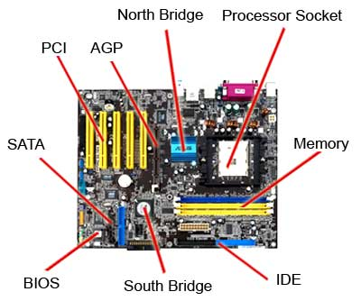

Placa de bază este placa principală a unui calculator, o componentă hardware complexă pe care sunt montate toate componentele hardware ale PC-urilor sau ale altor aparate electronice computerizate. Placa de bază reprezintă elementul de legatură dintre toate componentele calculatorului.
- Socket - este soclul (locașul) unde este introdus procesorul. Socket-ul poate fi LGA (Land Grid Array) și PGA (Pin Grid Array).
- Chipset - este parte a sistemului de logică a plăcii de bază, alcătuit din două părți, Northbridge și Southbridge. Toate componentele computerului comunică cu procesorul prin intermediul chipset-ului.
- Bus - este un circuit utilizat atât de northbridge cât și de southbridge. Viteza de bus, este măsurată în megahertzi (MHz).
- Cipul BIOS și UEFI - La pornire, placa de bază trebuie să știe ce dispozitive sunt conectate. Pentru a îndeplini această sarcină, placa are un firmware numit inițial BIOS apoi UEFI.
- Cip ul CMOS - este un cip inclus în southbridge și care păstrează setările BIOS-ului (ordinea de pornire, modificări în BIOS); este alimentat de bateria CMOS.
- Sloturile de expansiune - aici se montează componentele hardware, în special plăcile de expansiune. Principalele sloturi prezente pe o placă de bază modernă sunt: DIMM (Dual In-Line Memory Module), PCI (Peripheral Component Interconnect) și PCI-Express (PCI-e) (Peripheral Component Interconnect Express).
- Conectori și porturi - asigură transferul de date, conectarea perifericelor sau alimentarea cu energie a componentelor.